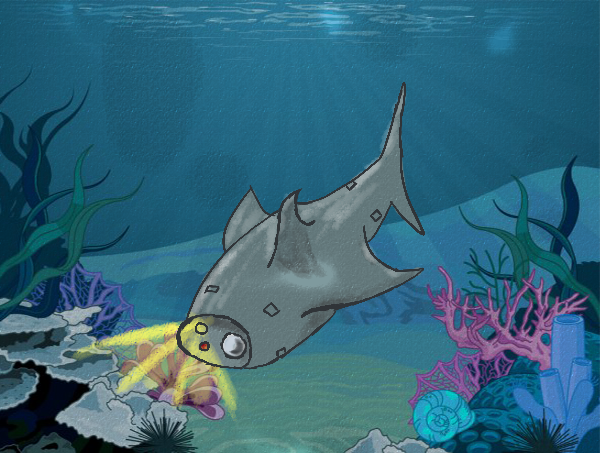

Vi har en ide som vil kunne skaffe oss et bedre innblikk i havet. Med moderne drone teknologi så planlegger vi å bygge en undervanns drone som kan drive rundt i havet og filme hva som skjer. Dronen vil kjøre rundt automatisk eller den kan bli styrt av en person.
Hvordan funker den?
Utstyr
På fronten av dronen så har den et vanlig kamera som vil kunne fange alt på film. Hvis den er langt nede hvor lyset ikke kommer så har den også en lommelykt som vil bli skrudd på. Itilleg til dette så har den også et IR-kamera som kan fange ting som ikke kameraet tar opp. Dronen er utstyrt med sensorer over hele kroppen som kan fange opp mange ulike målinger. Dronen vil bevege seg som en vanlig fisk og vil ikke fange oppmerksomheten eller skremme andre havdyr bort.